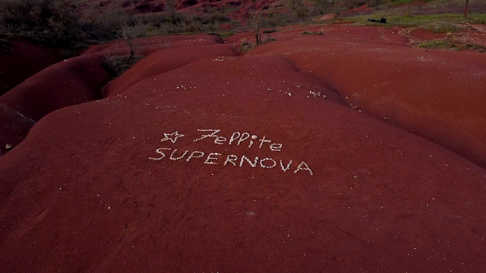

Co-Réalisateur · Cadreur · Technicien
Supernova
Clip musical · Fév. – Mars 2026
Caméra A (Sony FX6 + 28-45 f1.8), préparation technique et optiques, cadrage. Caméra B (FX3 + RS4 Pro), préparation téchnique et optique. Préparation et installation éclairage. Participation à la réalisation, au montage, à l'étalonnage et à la création de VFX.
Sony FX6FX3VFXÉtalonnage
Voir le clip ↗